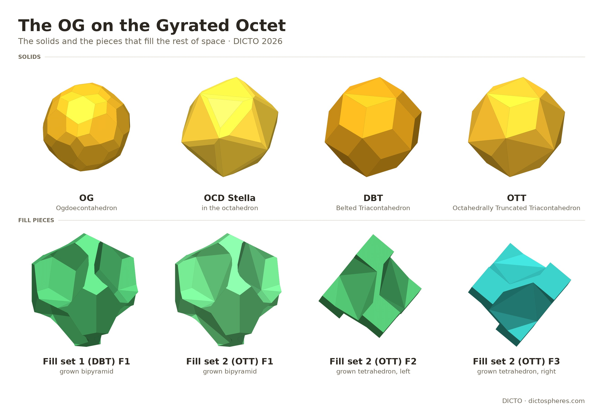
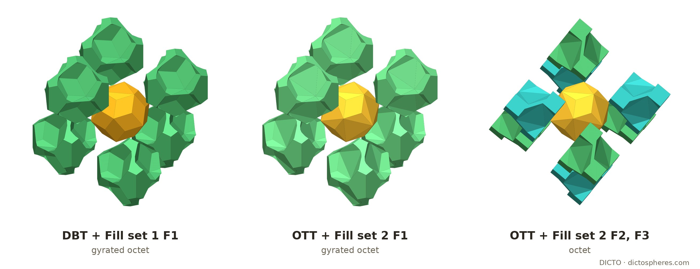

Twins at every layer: the Ogdoecontahedron, its OCD Stella, the DICTO Belted and the DICTO Octahedrally Truncated Triacontahedra in the gyrated tetrahedral–octahedral honeycomb, with one cell kit for every stacking and two-shape fill sets

The octet truss (Fuller [1]) is the tetrahedral–octahedral honeycomb: regular octahedra and tetrahedra, two tetrahedra per octahedron, every octahedron face against a tetrahedron. Cut perpendicular to a three-fold axis it falls into layers one octahedron thick, each layer filling the slab between two parallel planes [2, 3]. Stacking the layers so that each is the mirror image of the one below gives the gyrated honeycomb, the hexagonal-close-packed (A B A B) counterpart of the face-centred-cubic (A B C) octet; any sequence of the two stackings tiles space as well, periodic or not [2, 4]. In the gyrated octet every layer boundary is a mirror plane: across it an octahedron meets an octahedron face to face, and a tetrahedron meets a tetrahedron, the pair forming a triangular bipyramid.
Frame (as in [5]). The OG at the origin, its octahedron |x| + |y| + |z| ≤ R with R = 2φ/3, volume (64 + 32√5)/81; tetrahedra (16 + 8√5)/81; a cell of the honeycomb (one octahedron and two tetrahedra) (32 + 16√5)/27. A twin layer is the plane x + y + z = R and its parallels. All coordinates are pairs of rationals a + b√5; corners are solved and checked exactly, volumes are exact sums of determinants.
The same hexagon. The OG's eight joint hexagons lie on the eight faces of its octahedron [5]. Reflected in the face x + y + z = R, the OG gives the OG of the octahedron on the other side, and the two meet in the same six corners: the regular joint hexagon, side² = 2/9 − 2√5/27, covering (7 − 3√5)/2 ≈ 14.59% of the face.
A true twin. The reflected OG is not a translate of the OG (as it is in the octet and in the OG's body-centred cubic packing), because the OG, a pyritohedral solid, has no mirror plane perpendicular to a three-fold axis. Exactly, the twin is the OG turned 60° about the joint three-fold axis, checked with the rational rotation that turns (1,0,0) to (2/3, 2/3, −1/3). This is the spinel law of cubic crystals [6], whose twin plane is parallel to an octahedron face and whose twin operation is a half-turn about the ⟨111⟩ axis: because the OG has the 120° turn about that axis, the half-turn and the 60° turn give the same twin. Round the hexagon each edge opens into a wedge between the twins: a face beside the hexagon and its mirror image make an angle whose cosine is exactly (7 − 36√5)/109, an opening of about 47.6°.
Cut each octahedron into the OG and 8 caps, one under each face, by the planes through the centre and the octahedron's edges; keep each tetrahedron whole. Each cap is (octahedron − OG)/8 = (277 − 79√5)/1539 ≈ 0.065205, and the OG is (−1000 + 1240√5)/1539 ≈ 1.151868, (1025 − 435√5)/76 ≈ 68.83% of its octahedron. No piece crosses a face of its cell, so the same kit fills the octet, the gyrated octet and any stacking of the layers, at the same density.
The caps are chiral. The OG's three-fold turn about a face's axis maps the 18 OG corners in that face's cone onto themselves, but none of the three mirrors through the axis does. So the caps come in two hands, 4 + 4 per OG: the faces (1,1,1), (1,−1,−1), (−1,1,−1), (−1,−1,1) carry one hand, the other four the other (inversion swaps them).
At a twin layer a cap meets its own mirror image, a cap of the other hand, across the part of the face outside the joint hexagon, (3√5 − 5)/2 ≈ 85.41% of the face. Fused, they make a mirror-symmetric twin cap of (554 − 158√5)/1539 ≈ 0.130410. The two tetrahedra that meet across the layer make a triangular bipyramid of (32 + 16√5)/81 ≈ 0.836754. A gyrated octet can therefore be built from the OG, the left and right caps, the twin cap and the bipyramid (and the tetrahedron, where layers stack as in the octet).
In the octet each octahedron edge joins two OGs whose five-fold corners face each other exactly (axes 180° apart, 0.3629 apart), and a middle piece spans them, with a thick Penrose rhombus between the stars [5, §3]. In the gyrated octet only the edges lying in a twin layer change: round them the cells run octahedron, tetrahedron | tetrahedron, octahedron, so the OG across the edge is the mirror twin, not the octet's partner. Middle pieces off the layer stay wholly on their own side (float check: no volume crosses the plane).
The boundary pieces (exact). In the octet's keyless Penrose-core kit [5, §3] each octahedron is cut into the OG and six corner caps, every edge carries a middle piece (the hull of the two facing stars less both OGs), and caps and tetrahedra are notched by the middle pieces. At a twin layer the middle piece on each edge of the layer is Mg, and only two more shapes change: a boundary cap, a cap whose corner lies on a twin layer, 23/162 − 47√5/1215 ≈ 0.055477 (the octet's cap is (32 − 8√5)/243 ≈ 0.058072), and a boundary tetrahedron, a tetrahedron with a face on a twin layer, 41/162 + 4√5/135 ≈ 0.319340 (the octet's keyless tetrahedron (26 − 2√5)/81 ≈ 0.265776), in left and right hands as before. Computed by convex pieces for three stackings round one layer, the octet, a single twin layer and the gyrated octet:
So the octet's Penrose-core kit fills every stacking with three added shapes: Mg, the boundary cap and the boundary tetrahedron (each piece feels only the layer it touches). The Penrose cores stay on the middle pieces of the edges within a layer, three per cell in the gyrated octet against six in the octet; Mg has none, since the stars across a twin layer do not face. That each boundary piece is one solid and the same shape at every site is a float check.

The OCD Stella (DICTO DOI: 10.5281/zenodo.23430870), the stella cut of the OG's golden companion in its body-centred cubic packing, has its eight joint faces on the same eight planes. Turned into this frame by the cube axes of that packing (the turn carries the packing's OG exactly onto the OG here), it lies in the octahedron and fills (604 − 267√5)/9 ≈ 77.44% of it. Each joint face is an equilateral triangle of side² 8/3 − 8√5/9, (7 − 3√5) ≈ 29.18% of the octahedron face: exactly twice the OG's joint hexagon. Its mirror twin in a face is again the Stella turned 60°, and twin Stellas meet on the whole joint triangle.
The golden envelope (the rhombic triacontahedron of inradius 2/3 round the OG) does not fit as it is (float): its three-fold corners poke 0.0909 beyond the faces, and across a twin layer two envelopes would overlap by about 0.0175 per shared face. In the octet those corners become keys [5, §2]; at a twin layer they have nowhere to go.
The DICTO Jewel (first released with the Kaleidohedra app, DICTO DOI: 10.5281/zenodo.23223555) does not twin (float, ray-parity sampling): in its Stella–Jewel lattice a (111) twin through a Jewel layer leaves 4.0% of the sampled points near the layer uncovered and 4.2% covered twice; through a stella layer 5.1% and 5.9%; between layers 18–19%. The Jewel and the stella octangula are framed by cubes, and a cube mirrored across a body-diagonal plane is a different cube, whereas an octahedron mirrored in its face is simply the next octahedron of the gyrated octet.
Cut the golden envelope flat by the two octahedron faces x + y + z = ±R on one three-fold axis. DICTO named the result the DICTO Belted Triacontahedron (DBT); once cut it is a solid of its own, not a container.
In the gyrated octet. Every layer boundary is a twin plane, so each octahedron has its two pole faces on twin planes, exactly where the DBT is flat. Its mirror twin in a pole face is the DBT turned 60° (a true twin, as the OG). With a DBT in every octahedron, layer by translation and the neighbouring layers as mirror images, no DBT overlaps another: exact separating planes for all 56 neighbours checked (18 in the same layer, 19 above, 19 below). Twin DBTs meet flat, pole triangle to pole triangle, and the six keys round the belt reach into the tetrahedra of their own layer as in the octet. The DBTs fill (493 − 219√5)/6 ≈ 55.02% of space (82.53% of each octahedron).

The triacontahedron has twenty identical places for the DBT's cut, its twenty three-fold corners; at each the cut runs along three long diagonals and takes off the same golden pyramid, (−44 + 20√5)/81. Eight of these corners point through the faces of the octahedron (they are the octet's keys [5, §2]); the DBT cuts two. DICTO proposed cutting more of them. Cut at all eight, the triacontahedron becomes its intersection with the octahedron, which DICTO named the DICTO Octahedrally Truncated Triacontahedron (DICTO OTT).
Packed by themselves (float; DICTO proposed checking how densely they pack alone). The octet and the gyrated octet place the solids for their golden joins and twin layers, not for density. Alone, both solids are centrally symmetric, and a search over lattices (copies at the points of one lattice, every lattice vector outside twice the solid, checked with the 26 nearest copies) finds lattice packings of density 0.906282 for the OTT and 0.828621 for the DBT; the same search gives 0.947368 = 18/19 for the octahedron (Minkowski) and 0.8018 for the rhombic triacontahedron (0.801741 in [12]). These are lower bounds for the densest packings; packings that are not lattices could be denser.
DICTO proposed filling the space the solids leave. As for the golden envelope and its grown piece in the octet [5, §4], every point outside the solids is given to its nearest site; a fill piece is the Voronoi region of a site less the solids. In the gyrated octet the sites are the bipyramids' centres (the centres of the tetrahedron faces on the twin layers, one per cell); in the octet they are the tetrahedron centres (two per cell), whose regions are cubes of edge R.
| Set (DICTO's names) | Lattice | Piece | Volume | Hand | Sphericity (float) |
|---|---|---|---|---|---|
| DICTO Fill set 1 (DBT) | gyrated | F1, grown bipyramid | (968 − 392√5)/81 ≈ 1.129153 | one | 0.586 |
| DICTO Fill set 2 (OTT) | gyrated | F1, grown bipyramid | (704 − 272√5)/81 ≈ 1.182587 | one | 0.612 |
| DICTO Fill set 2 (OTT) | octet | F2, F3, grown tetrahedra | (352 − 136√5)/81 ≈ 0.591293 | left, right | 0.638 |
So each solid with one more shape fills space: the DBT and Fill set 1 F1 the gyrated octet; the OTT and Fill set 2 F1 the gyrated octet, and the OTT with F2 and F3 the octet. Exact, for every fill piece touching the central solid (6, 6 and 8): its volume, the Voronoi region less the solids in it; and an isometry of the whole local arrangement (solids and sites) taking the first piece to it, so each set has one shape throughout. A mirror of the arrangement fixes each bipyramid site, so F1 is its own mirror image; in the octet four of the eight pieces are reached only by mirrors and no mirror fixes a site, so F2 and F3 are left and right (a float check finds no mirror symmetry of the piece's own). That each piece is one solid is a float check. The cuts between fill pieces are flat Voronoi planes; the golden faces are the solids'.

The gyrated tetrahedral–octahedral honeycomb, its hcp stacking and the non-periodic stackings of the same layers are classical [2, 3, 4]; binary hard tetrahedra and octahedra self-assemble into the octet arrangement [7]. Twinning on an octahedron-face plane by a half-turn about ⟨111⟩ is the spinel law [6]; the gyrated honeycomb is described in [4] as reflective layers rotated 60°. Kabai's golden octet truss [8] is a module of one tetrahedral and one octahedral part of a golden rhombohedron, laid in planar and icosahedral lattices; his 54-faced space-filler [9] removes eight corners of a rhombic triacontahedron, each half an oblate golden rhombohedron, at the corners of a cube, for a body-centred cubic packing: a different cut and a different packing from the DBT, which removes two opposite corners, each one sixth of an oblate golden rhombohedron, and stacks as twins, and from the OTT, which removes eight, each one sixth, by the octahedron's own faces. The truncated rhombic triacontahedra described elsewhere cut the twelve five-fold corners (42 faces, full icosahedral symmetry) [10]; a catalogue of convex polyhedra with golden rhombi lists reduced and expanded triacontahedra only [11]. Giving the space outside golden solids to nearest sites is the method of the companion paper's grown piece [5, §4].
Not found in our reference library (the full text of the 80 sources in the Appendix, searched 20 October 2026) or in web searches the same day: icosahedral solids placed in the octahedra of the gyrated octet; the OG or the OCD Stella twinned across its octahedron faces; a cell kit common to the octet and the gyrated octet; the twin cap, the mirror middle piece, the boundary cap and tetrahedron, the DBT or the OTT as a solid, or the fill sets. What is claimed is these results and their exact values; the honeycombs, the stackings and the twin law are not ours.
Open. Exact proofs that each boundary piece and each fill piece is one solid; the OTT and the fill sets in the Kaleidohedra app (the OG, OG + caps, OCD Stella and DBT on the gyrated octet are there, in The OG on the Octet Truss); physical prints of the kits.
Exact scripts (ℚ(√5)): check.py (the shared hexagon, mirror ≠ translate, the wedge), twin.py (the 60° twin), kit.py and hand.py (caps, chirality), gyr_exact.py (hexagon share, twin cap, bipyramid, Mg, the DBT in the gyrated octet), stella_twin_exact.py (the OCD Stella), dbt_exact.py (the DBT), gyr_boundary_exact.py (the Penrose-core boundary pieces), cut8_exact.py (the OTT), fill_exact.py (the fill sets). Float: gyr_cores.py (middle pieces at a twin layer), belted.py, jewel_twin.py and jewel_twin_planes.py (the Jewel), gyr_boundary.py, dbt_grow.py, cut8_size.py, dbt_fill.py, fill_hands.py, kits_page_data.py, lattice_pack.py. Logs: dbt-exact.log, gyr-exact.log, stella-twin.log, gyr-cores.log, gyr-boundary-exact.log, cut8-exact.log, cut8-size.log, fill-exact.log, fill-hands.log, lattice-pack.log. Figures: gyr_page.py (meshes, float copies of the exact solids), shoot.mjs, make_figs.py, cover_lineup.py, cover_shots.mjs, cover_compose.py, fig_clusters.py, fig_clusters_compose.py. All at the commit given above.
DICTO's reference library (private copies, with public citations in the Kaleidohedra repository's docs/SOURCES.md) holds 263 entries. For this paper three were added on 20 October 2026: Cadotte et al. [7] (arXiv copy) and the Wikipedia pages [4] and [6] (CC BY-SA). The full text of the 80 sources below was searched on 20 October 2026 for this paper's subjects: the gyrated honeycomb; hcp and stacking; twins and the spinel law; the tetrahedral–octahedral honeycomb and octet truss; bipyramids; the rhombic triacontahedron and its truncations; golden rhombohedra; pyritohedral symmetry; mirror images and enantiomorphs; and the names Ogdoecontahedron, OG and belted. None contains the results of this paper. The relevant hits are the honeycomb and its stackings [2, 3, 4, 7], the spinel law [6], and Kabai's golden octet truss and 54-faced space-filler [8, 9]; the word “gyrated” also occurs in a virology paper (Twarock and Luque 2019) for a two-dimensional lattice, unrelated. Thirteen further library items are page images without a text layer and could not be searched by text: the patents of Fuller (1954, 1961, 1962), Snelson (1965), Pearce (1971, 1976), Baer (1973), Hogan (1976), Bergman (1988) and Lalvani (1988, 1995, 1997), and Fedorov (1885); their subjects are recorded in the library index.
Web searches (20 October 2026): polyhedra inscribed in the octahedra of the gyrated tetrahedral–octahedral honeycomb, and twins in hcp stackings; the spinel law as a 60° turn or a (111) mirror; icosahedral space-filling solids in the octet or at its twin boundaries with the golden ratio; and the bibliographic details of [7].
| Author(s) | Year | Title |
|---|---|---|
| Luca Pacioli, Leonardo da Vinci (ill.) | 1509 | Divina proportione |
| Albrecht Dürer | 1525 | Underweysung der Messung mit dem Zirckel und Richtscheyt |
| Wenzel Jamnitzer, Jost Amman (engr.) | 1568 | Perspectiva corporum regularium |
| Johannes Kepler | 1596 | Prodromus dissertationum cosmographicarum continens Mysterium cosmographicum |
| Johannes Kepler | 1619 | Harmonices mundi libri V |
| Euclid, T. L. Heath (tr.) | 1908 | The Thirteen Books of Euclid's Elements, Vol. III (Books X-XIII) |
| M. Goldberg | 1937 | A class of multi-symmetric polyhedra |
| Haresh Lalvani | 1990 | Transformational part-count in layered octahedral-tetrahedral truss configurations (NASA TM-102635) |
| P. W. Messer | 1995 | Stellations of the rhombic triacontahedron and beyond |
| M. Baake, F. Gähler | 1998 | Symmetry structure of the Elser-Sloane quasicrystal |
| T. C. Hales | 1998 | An overview of the Kepler conjecture |
| M. Baake | 1999 | A guide to mathematical quasicrystals |
| O. Ogievetsky, Z. Papadopolos | 1999 | On Quasiperiodic Space Tilings, Inflation and Dehn Invariants |
| U. Betke, M. Henk | 1999 | Densest lattice packings of 3-polytopes |
| Z. Papadopolos, O. Ogievetsky | 1999 | On Inflation Rules for Mosseri-Sadoc Tilings |
| Z. Papadopolos, O. Ogievetsky | 1999 | On quasiperiodic space tilings, inflation and Dehn invariants |
| R. V. Moody | 2000 | Model sets: a survey |
| M. Senechal | 2004 | Donald and the golden rhombohedra |
| S. Kabai | 2007 | 54-Faced Space-Filling Polyhedron (Wolfram Demonstration; description and screenshot) |
| S. Kabai | 2007 | Golden Octet Truss (Wolfram Demonstration; description and screenshot) |
| Wikipedia contributors (2007 mirror) | 2007 | Kyushindo (2007 version) |
| S. Kabai | 2008 | A Rhombic Dodecahedron Made of Rhombic Triacontahedra (Wolfram Demonstration; description and screenshot) |
| S. Kabai | 2008 | Relating a Rhombic Triacontahedron and a Rhombic Dodecahedron (Wolfram Demonstration; description and screenshot) |
| M. Koca, M. Al-Ajmi, N. O. Koca | 2009 | Grand antiprism and quaternions |
| M. Koca, M. Al-Ajmi, N. O. Koca | 2009 | Quaternionic representation of snub 24-cell and its dual polytope derived from E8 root system |
| S. Torquato, Y. Jiao | 2009 | Dense packings of polyhedra: Platonic and Archimedean solids |
| B. Grünbaum | 2010 | The Bilinski dodecahedron, and assorted parallelohedra, zonohedra, monohedra, isozonohedra and otherhedra |
| P. Kramer | 2010 | Gateways towards quasicrystals |
| A. M. Cutler, E. Schulte | 2011 | Regular polyhedra of index two, I |
| D. Frettlöh | 2011 | Icosahedral tilings in R3: the ABCK tilings (draft chapter) |
| J. Koskinen | 2011 | Unusual tilings and transformations |
| J. de Graaf, R. van Roij, M. Dijkstra | 2011 | Dense regular packings of irregular non-convex particles |
| M. Koca, N. O. Koca, M. Al-Ajmi | 2011 | Branching of the W(H4) polytopes and their dual polytopes under the Coxeter groups W(A4) and W(H3) represented by quaternions |
| M. Koca, N. O. Koca, M. Al-Barwani | 2011 | Snub 24-cell derived from the Coxeter-Weyl group W(D4) |
| T. Etzion | 2011 | Product constructions for perfect Lee codes |
| A. Garber, A. Gavrilyuk, A. Magazinov | 2012 | The Voronoi conjecture for parallelohedra with simply connected delta-surface |
| J. C. Lagarias, C. Zong | 2012 | Mysteries in packing regular tetrahedra |
| M. Baake, U. Grimm | 2012 | Mathematical diffraction of aperiodic structures |
| M. Koca, N. O. Koca, R. Koc | 2012 | Affine Coxeter group Wa(A4), quaternions, and decagonal quasicrystals |
| P. F. Damasceno, M. Engel, S. C. Glotzer | 2012 | Crystalline assemblies and densest packings of a family of truncated tetrahedra and the role of directional entropic forces |
| R. Gabbrielli, Y. Jiao, S. Torquato | 2012 | Families of tessellations of space by elementary polyhedra via retessellations of face-centered-cubic and related tilings |
| S. Torquato, Y. Jiao | 2012 | Organizing principles for dense packings of nonspherical hard particles: not all shapes are created equal |
| M. Kléman | 2013 | Defects in quasicrystals, revisited: I-flips, approximants, phason defects |
| N. Fujita, H. Takano, A. Yamamoto, A.-P. Tsai | 2013 | Cluster packing geometry for Al-based F-type icosahedral alloys |
| P.-P. Dechant, J. Wardman, T. Keef, R. Twarock | 2014 | Viruses and fullerenes: symmetry as a common thread? |
| A. Campello, G. C. Jorge, J. E. Strapasson, S. I. R. Costa | 2015 | Perfect codes in the lp metric |
| K. Deguchi, M. Nakayama, S. Matsukawa, K. Imura et al. | 2015 | Crystal structure of superconducting 1/1 cubic Au-Ge-Yb approximant with Tsai-type cluster |
| M. Baake, D. Damanik, U. Grimm | 2015 | What is aperiodic order? |
| M. Firsching | 2015 | Computing maximal copies of polytopes contained in a polytope |
| N. O. Koca, M. Koca, A. Al-Mukhaini, A. Al-Qanobi | 2015 | Quaternionic representations of the pyritohedral group, related polyhedra and lattices |
| R. Twarock, M. Valiunas, E. Zappa | 2015 | Orbits of crystallographic embedding of non-crystallographic groups and applications to virology |
| S. Kabai | 2015 | Cluster of 14 Rhombic Triacontahedra (Wolfram Demonstration; description and screenshot) |
| A. T. Cadotte, J. Dshemuchadse, P. F. Damasceno, R. S. Newman, S. C. Glotzer | 2016 | Self-assembly of a space-tessellating structure in the binary system of hard tetrahedra and octahedra |
| C. Hann, J. E. S. Socolar, P. J. Steinhardt | 2016 | Local growth of icosahedral quasicrystalline tilings |
| R. M. K. Dietl, J.-H. Eschenburg | 2016 | The icosahedral quasiperiodic tiling and its self-similarity |
| A. Stergiou | 2018 | Bootstrapping hypercubic and hypertetrahedral theories in three dimensions |
| A. Garber | 2019 | Voronoi conjecture for five-dimensional parallelohedra |
| D. Poland, S. Rychkov, A. Vichi | 2019 | The conformal bootstrap: theory, numerical techniques, and applications |
| R. Twarock, A. Luque | 2019 | Structural puzzles in virology solved with an overarching icosahedral design principle |
| T. Ishimasa | 2019 | Icosahedral quasicrystal, 1/1 and 2/1 approximants in Zn-based ternary alloys containing Au and Yb/Tb |
| A. Al-Siyabi, N. O. Koca, M. Koca | 2020 | Icosahedral polyhedra from D6 lattice and Danzer's ABCK tiling |
| M. Koca, R. Koc, N. O. Koca, A. Al-Siyabi | 2020 | Icosahedral tiling with dodecahedral structures |
| N. O. Koca, R. Koc, M. Koca, A. Al-Siyabi | 2020 | Dodecahedral Structures with Mosseri-Sadoc Tiles |
| V. R. Krishnamurthy, E. Akleman, S. G. Subramanian et al. | 2020 | Bi-axial woven tiles: interlocking space-filling shapes based on symmetries of bi-axial weaving patterns |
| V. R. Krishnamurthy, E. Akleman, S. G. Subramanian, M. Ebert, J. Cui, C. Fu, C. Starrett | 2022 | Geometrically interlocking space-filling tiling based on fabric weaves |
| B.-X. Lao, S. Rychkov | 2023 | 3D Ising CFT and exact diagonalization on icosahedron: the power of conformal perturbation theory |
| D. Smith, J. S. Myers, C. S. Kaplan, C. Goodman-Strauss | 2023 | An aperiodic monotile |
| R. Akpanya et al. | 2024 | Topologically interlocking blocks inside the tetroctahedrille |
| I. J. Dejter, L. R. Fuentes, C. A. Araujo | 2025 | Perfect truncated-metric codes in lattice graphs and superlattice graphs |
| S. Rychkov | 2025 | Conformal bootstrap: from Polyakov to our times |
| M. Kovačević | 2026 | An isodiametric theorem and lattice diameter-perfect codes in A3 |
| R. Al Raisi, N. O. Koca, M. Koca, R. Koc | 2026 | Modified Mosseri-Sadoc tiles from D6 |
| Wikipedia contributors | 2026 | Crystal twinning (incl. the spinel law) |
| Wikipedia contributors | 2026 | Fullerene |
| Wikipedia contributors | 2026 | Goldberg polyhedron |
| Wikipedia contributors | 2026 | Kenshiro Abbe |
| Wikipedia contributors | 2026 | Kyūshindō |
| Wikipedia contributors | 2026 | Mitsusuke Harada |
| Wikipedia contributors | 2026 | n-flake (Sierpinski icosahedron) |
| Wikipedia contributors | 2026 | Tetrahedral-octahedral honeycomb (incl. the gyrated form) |